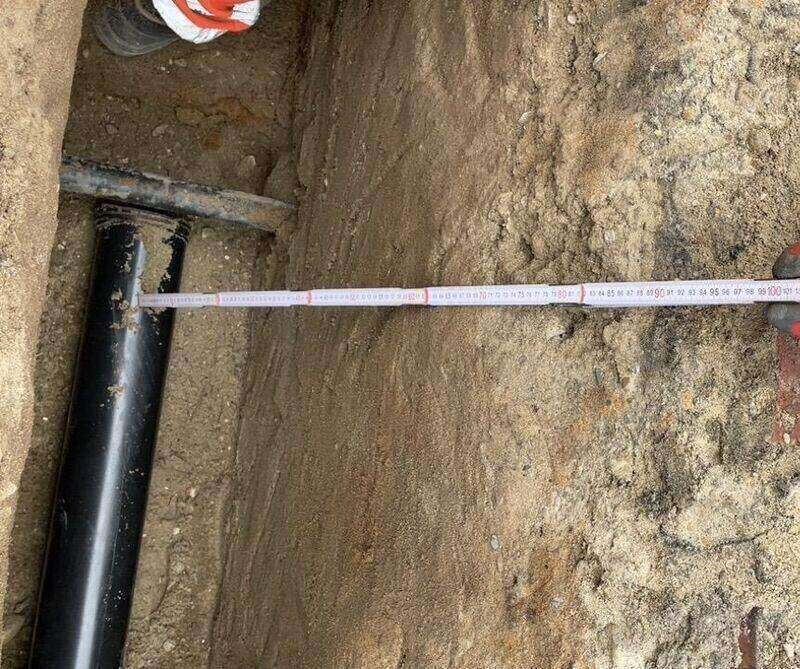
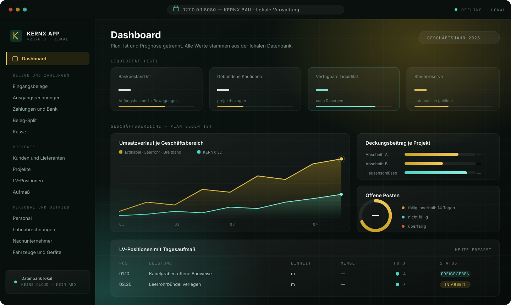

M.01
Belege und Zahlungen
Eingangsbelege, Ausgangsrechnungen, Bankbewegungen, Beleg-Split und Kassenbuch — so aufbereitet, dass die Steuerberatung damit arbeiten kann.

Diese Seite beschreibt ein Vorhaben, kein bestehendes Programm. Unser Ziel für das kommende Jahr ist eine einfache, lokal laufende Verwaltung für Belege, Projekte und Aufmaß. Wir arbeiten heute noch nicht damit. Im Moment führen wir unsere Unterlagen mit Tabellen, Tagesbericht und Fotoprotokoll — einfach, aber ordentlich.

Entwurf · kein laufendes ProgrammEs ist eine gezeichnete Skizze unserer Vorstellung, wie die Anwendung einmal aussehen könnte. Es ist kein Bildschirmfoto eines laufenden Programms. Die Anwendung existiert nicht, die Balken und Kurven zeigen keine Daten und keine Geschäftszahlen.
Alles Folgende ist eine Zielvorstellung für 2027 und keine heute verfügbare Funktion. Wir schreiben es auf, damit nachvollziehbar ist, woran wir arbeiten wollen.
Eingangsbelege, Ausgangsrechnungen, Bankbewegungen, Beleg-Split und Kassenbuch — so aufbereitet, dass die Steuerberatung damit arbeiten kann.
Kunden, Lieferanten, Projekte, LV-Positionen und Aufmaß an einer Stelle statt in fünf Tabellen.
Mitarbeiter, Lohnabrechnungen und Nachunternehmer mit den zugehörigen Nachweisen.
Fahrzeuge, Geräte, Mieten und Einsatzzeiten — damit die Kalkulation die echten Kosten kennt.
Plan, Ist und Prognose getrennt: Liquidität, offene Posten, Deckungsbeitrag je Geschäftsbereich.
Die Anwendung soll auf dem eigenen Rechner laufen — ohne Cloud und ohne Abo. Bisher ist das eine Entscheidung auf dem Papier.
Wir sind ein junges Unternehmen und wollen wissen, was ein Abschnitt wirklich kostet, bevor wir ein Angebot schreiben. Dafür brauchen wir Ordnung in den Daten — heute mit Tabellen, später hoffentlich einfacher.
Geräte, Zeiten und Material sollen dort zusammenlaufen, damit unsere Einheitspreise gerechnet und nicht geschätzt sind.
LV-Position und Aufmaß sollen zusammenhängen, damit die Abrechnung aus den Daten entsteht und nicht daneben.
Ziel ist, dass Übergabemappe und Rechnung aus demselben Bestand kommen.
Geplant ist eine lokale Anwendung, damit Projektdaten nicht durch einen fremden Cloud-Anbieter laufen.
Wir möchten nicht davon abhängen, dass ein Anbieter die Preise erhöht oder das Produkt einstellt.
Verlangt Ihr Prozess ein bestimmtes Nachweisformat, möchten wir es selbst einbauen können.
Diese Seite beschreibt ein Ziel. Wenn Sie wissen möchten, wie wir heute arbeiten und dokumentieren, rufen Sie uns an — das erklären wir in fünf Minuten.